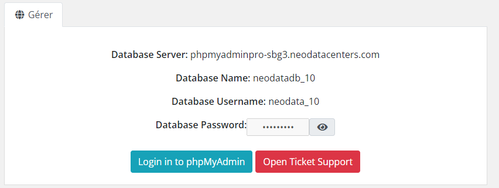
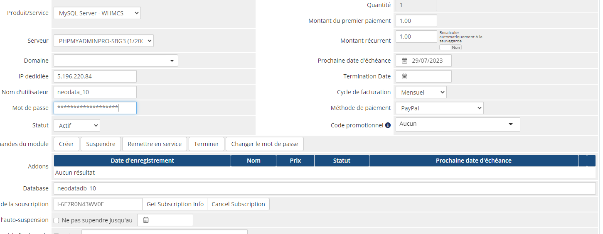

MySQL Server Provisioning
Automatiser vos services et gagnez du temps, c'est de l'argent !
MySQL Server Provisioning est un module puissant qui automatise chaque étape du processus de provisionnement des bases de données, de la configuration initiale à la gestion continue via PhpMyAdmin. La configuration conviviale garantit une livraison rapide et simplifiée des bases de données entièrement opérationnels, permettant à vos clients d'utiliser leur service immédiatement.
MYSQL SERVER POUR WHMCS
Fonctionnalités Principales
- Création automatique
- Suspension automatique
- Réactivation automatique
- Clôture automatique
- Gestion de plusieurs serveurs SQL
- Changer le mot de passe de la base SQL
- Panneau de contrôle PHPMYADMIN intégré
Fonctionnalités Admin
- Gestion de plusieurs serveurs SQL
- Création automatique
- Suspension automatique
- Réactivation automatique
- Clôture automatique
- Changer le mot de passe de la base SQL
Fonctionnalités Clients
- Informations sur la base de données
- Connexion au PhpMyAdmin
- Supprimer sa base de données
Pré-requis système
Complètement personnalisable
Le module est conçu de manière tel que vous pouvez absolument tout personaliser sur votre interface client, les images, la disposition ...etc.
Multilangues
Le module supporte toutes les langues de WHMCS.
Essai gratuit
Installation simple et rapide
L'installation est simple et rapide et le support technique est entièrement gratuit.
Acheter
Captures d'écran
-  